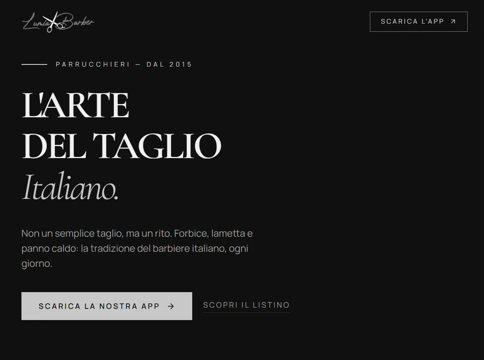
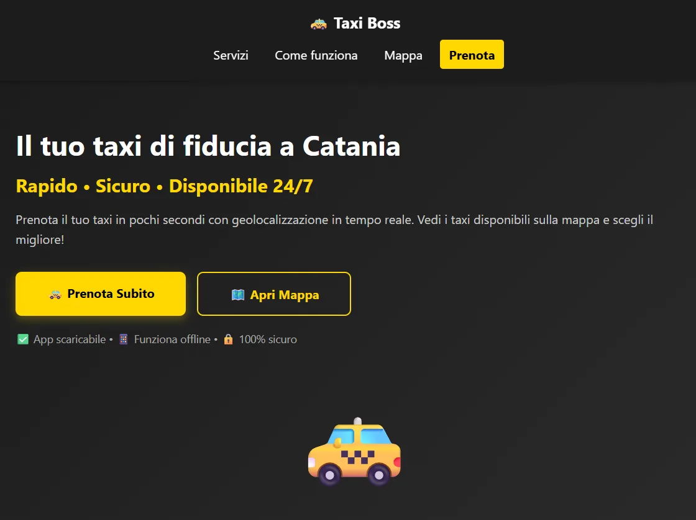
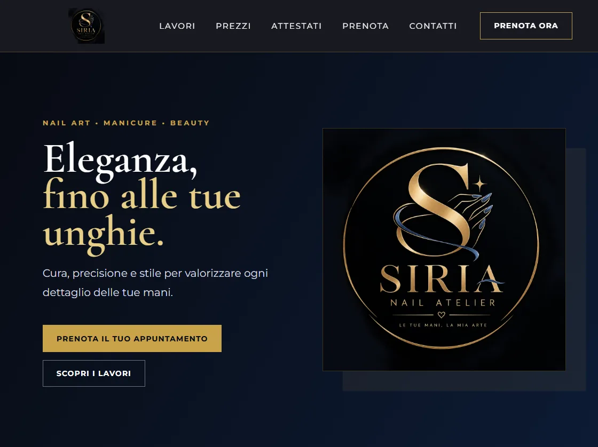
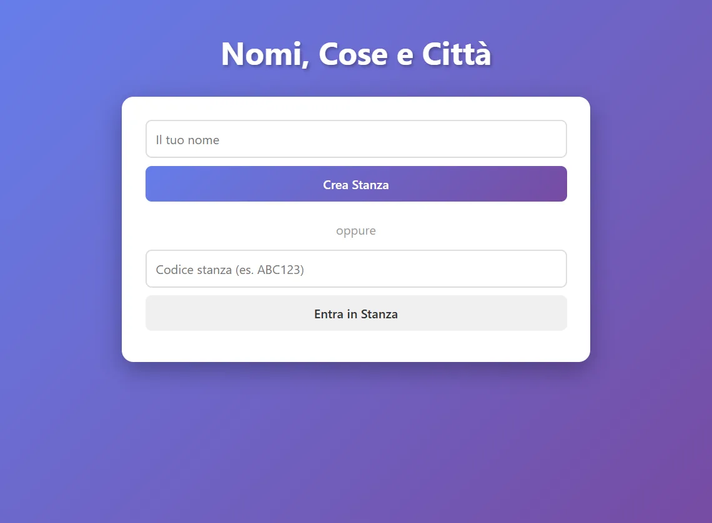
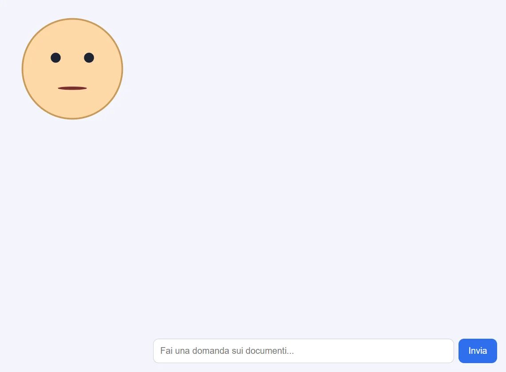

Frontend
Interfacce, layout e micro-interazioni.
HTML592%
CSS388%
JavaScript84%
React66%
Full Stack Developer in formazione Builder di cose strane e utili
Ho 18 anni, vivo a Misterbianco e trasformo curiosità in progetti: assistenti AI, piattaforme web, app e piccoli ecosistemi digitali. Mi piace capire come funziona tutto — e poi farlo funzionare meglio.
{ "ruolo": "Full Stack Developer", "base": "Misterbianco (CT)", "focus": ["AI", "Web", "App"], "stato": "disponibile" }
Disponibile dal lunedì al venerdì nel pomeriggio per lavoro part-time, stage o progetti.
Frequento il quinto anno di Informatica all'IT Archimede di Catania. La parte che mi entusiasma di più non è scrivere righe di codice: è vedere un'idea diventare qualcosa che si può aprire, usare, rompere e migliorare.
Così sono nati Nova, un assistente AI che controlla PC e telefono, Lumia Barber, un ecosistema digitale per un salone, e GiovaBot, un bot WhatsApp che è praticamente un piccolo mondo. Ogni progetto è una scusa per imparare qualcosa che non sapevo fare.
Fuori dallo schermo organizzo gare di robotica e ho lavorato in segreteria. Due contesti diversi che mi hanno insegnato la stessa cosa: le persone vengono prima della tecnologia.
Prototipo, testo, sbaglio, rifaccio. È così che imparo davvero.
Dall'interfaccia al database, passando per API, AI e deploy.
Un progetto funziona meglio quando anche il dettaglio ha senso.
Le cose che mi ricaricano.
Faccio competizioni di simracing, non a grandi livelli: mi piace la precisione del setup, la costanza e migliorare decimo dopo decimo.
Non amo i livelli a caso: queste percentuali raccontano quanto mi sento autonomo, non quanto mi piacciono le tecnologie. Il resto lo imparo costruendo.
Interfacce, layout e micro-interazioni.
Logica, API e modelli che girano in locale.
Prodotti che vivono su un telefono o in un mondo.
Il setup con cui porto le idee fuori dalla testa.
Le cose che non si vedono in un commit.
Non sono un senior, ma so usarla bene.
Lavoro molto con l'AI per prototipare e imparare, ma la tratto come un acceleratore: verifico sempre il risultato e non la uso come scorciatoia.
Web, app, AI, bot e giochi. Ogni card racconta cosa ho costruito, con che cosa e a che punto sono. Clicca per aprire il dettaglio.
Assistente AI locale per Windows: 58 strumenti, 73 controlli automatici e voce gestita da Ollama, Whisper e Piper.

Live 02 Apri caso studio ↗Quattro declinazioni per un barbiere: sito React, gestionale, app Expo e backend FastAPI con MongoDB, OAuth ed email Resend.
Oltre 80 comandi WhatsApp: economia, minigiochi, missioni, achievement e admin, con Groq per l'AI e voce sintetizzata.

Demo PWA 04 Apri caso studio ↗Demo nata da un compito scolastico Android: ho ripiegato su una web app con mappa Leaflet simulata, PWA e prenotazione WhatsApp.

Cliente 05 Apri caso studio ↗Nato come passatempo per mia sorella che fa le unghie: one-page statico con galleria, attestati, branding e prenotazioni WhatsApp.

Giocabile 06 Apri caso studio ↗Nato per non scrivere a mano: stanze, lobby, categorie, timer e punteggi sincronizzati su Socket.IO per giocare con amici e famiglia.

Beta 07 Apri caso studio ↗Tre prototipi RAG riuniti in un caso studio: risposte ancorate ai documenti scolastici, citazioni e avatar 3D.
Tycoon di riparazioni in Flutter: garage, mercato, lavori a tempo e sei missioni. Non è un racing game, ma un gestionale con salvataggi locali.
Nato dall’idea di far diventare GiovaBot un gioco: concept Flutter con mappa CustomPainter e zoom verso il casinò. Logica ancora da costruire.
Notificatore Python per Torn: vendite, DM, energia e cooldown via ntfy e CallMeBot, con stato persistente e healthchecks.io.
Assistente vocale Windows costruito seguendo il tutorial di FatihMakes: Vosk, Tkinter, edge-tts e LLM via OpenRouter e Gemini.
Prototipo Flutter separato da Nova: interfaccia vocale STT/TTS e concept UI. Manca ancora il ponte MethodChannel nativo.
Mod Forge 1.20.1 con la filiera dell'arancino: ingredienti, ricette e texture pixel art. Compila in JAR ma va in crash al caricamento.
Il sito che stai guardando: HTML, CSS e JavaScript senza framework, font e asset locali, animazioni e schede progetto interattive.
Nota onesta: le percentuali indicano lo stato reale del progetto, non quanto ci ho messo. Alcuni sono in uso, altri sono laboratori ancora aperti. Tutti mi hanno insegnato qualcosa.
La segreteria mi ha insegnato ad ascoltare. La robotica mi ha insegnato a mantenere la calma quando qualcosa non funziona davanti a cento persone.
Accoglienza clienti, gestione chiamate e supporto nella compilazione delle pratiche.
Gestione delle gare, rispetto delle regole e coordinamento dei team durante le competizioni.
Parte del team che organizza e fa funzionare una competizione di robotica regionale.
Supporto amministrativo e gestione documentale in un contesto reale.
Quinto anno, indirizzo Informatica. Basi di programmazione, sistemi, reti e progettazione software.
Non conta quante tecnologie conosco: conta saper scegliere quella giusta e portarla fino in fondo.
Il prossimo livello
Cerco un lavoro nei pomeriggi, dal lunedì al venerdì, dove poter imparare da persone più esperte e portare valore concreto.
Cambridge C1 di inglese e certificazione Full Stack Developer. Non per collezionare attestati, ma per avere basi più solide.
Dalla progettazione al deploy, passando per AI e prodotti che risolvono problemi reali. Con lo stesso approccio: costruire per capire.
Disponibile per part-time, stage, progetti freelance e collaborazioni.
Hai un'idea, un progetto o un'opportunità?
Posso portare energia, curiosità e una buona dose di codice. Se cerchi qualcuno che impari in fretta e non abbia paura di sporcarsi le mani, scrivimi.